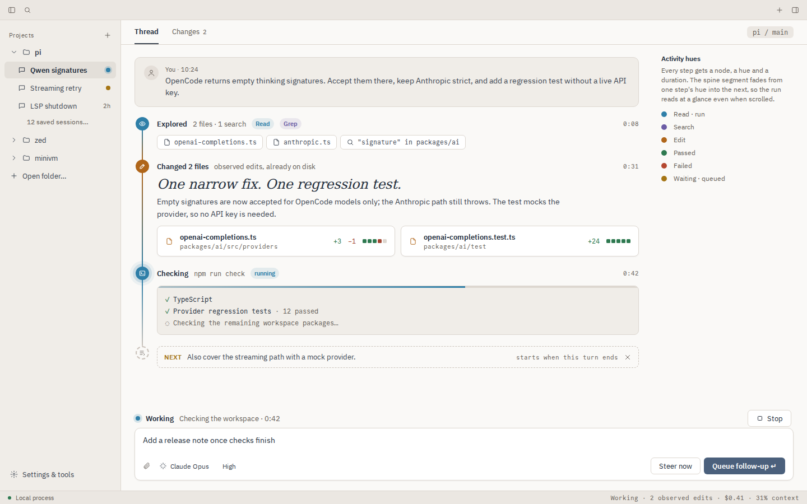
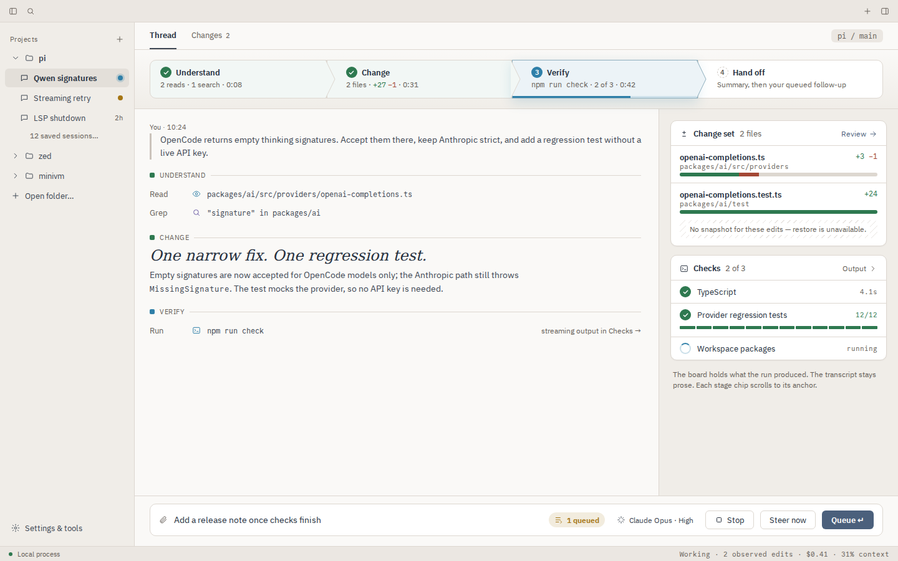
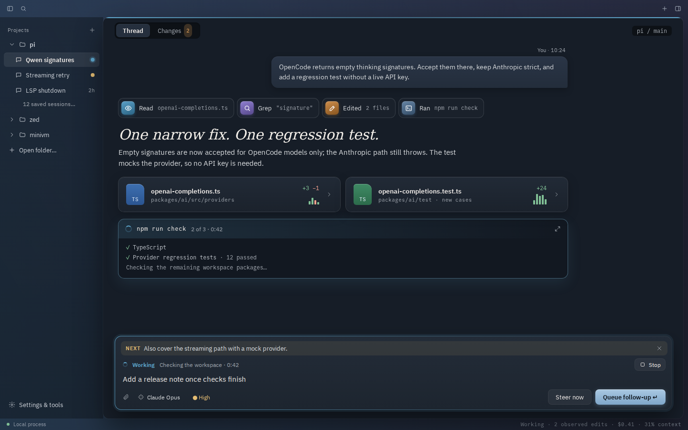
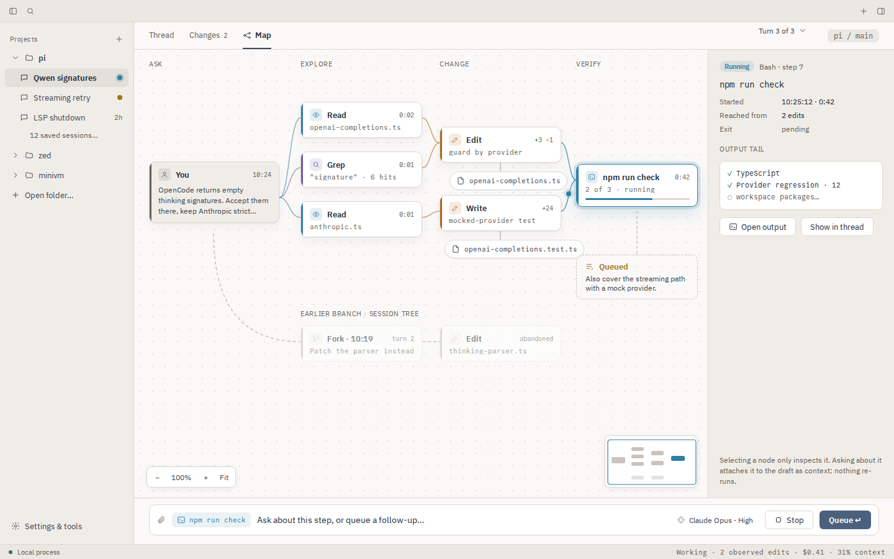
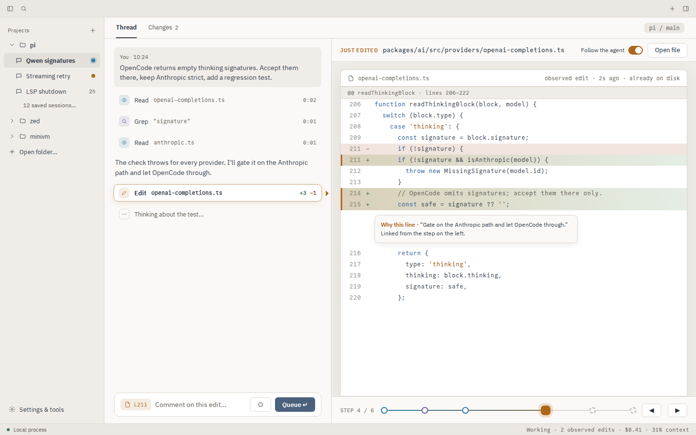
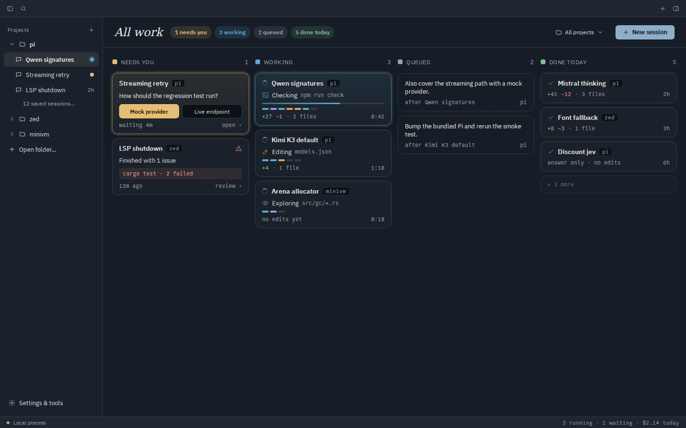
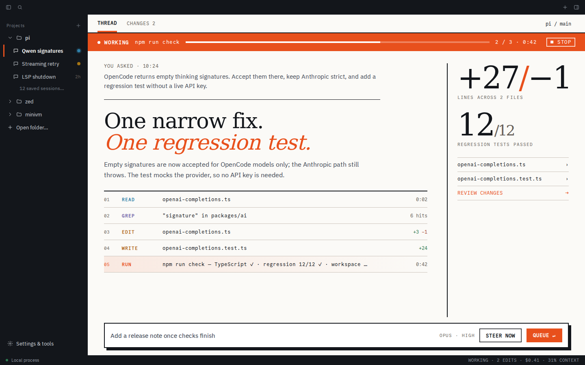
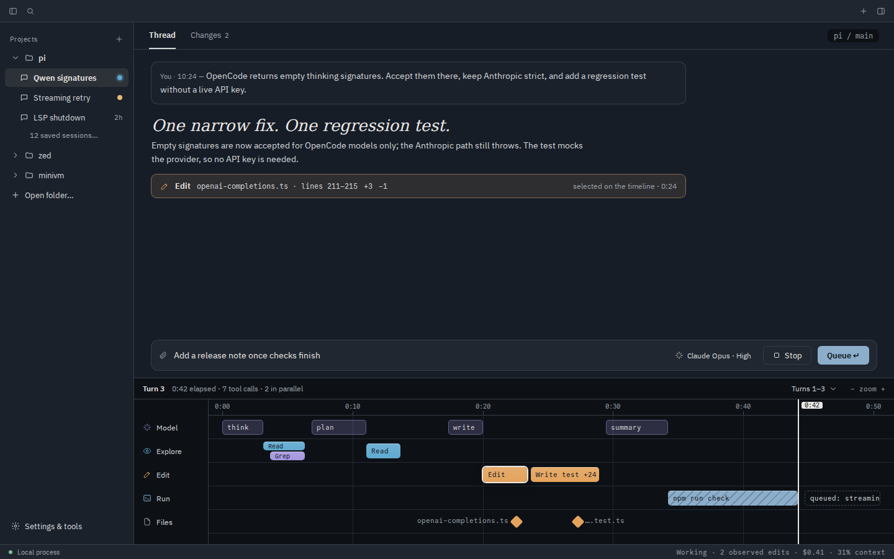

Pi Desktop · design study · 2 Oct 2026 · static mocks, not implemented UI
Make the work visible.
Eight alternatives to the current Moonstone thread, building on the workbench vision, the grouped-result polish and the streamline study. Every effect in these mocks is something GPUI can paint natively; nothing depends on browser-only CSS.
Why it reads as bland
Value range is too narrowCanvas, panel, bar and raised sit within ~6% lightness of each other, and the accent is a low-chroma slate.
Colour carries no meaningRead, edit, run, pass, fail and wait all render in the same ink. Your eye has nothing to sort by.
The process is invisibleA run has a shape (explore → change → verify → hand off), but it's printed as a flat tool log.
No depth, almost no motionBorders do all the separating. shadow_lg only appears on popovers, and the spinner is the only with_animation.
Within one turn
Each screen tells the same story: the Qwen signatures session, mid-verification, with one follow-up queued. Click a screen to open the HTML mock.

A · RECOMMENDED BASERun rail
The turn becomes a timeline. Each step gets a node, a hue and a duration. The spine fades from one hue into the next, and the queued follow-up appears as the rail's dashed future.
- Six semantic activity hues, kept at ~11% tint for backgrounds
- Consecutive reads and searches fold into one "Explored" step
- The live node pulses, and the check output has a progress bar
- Changed-file cards carry diff blocks (from the grouped result)
GPUIdiv borders, 2-stop gradient per segment, border_dashed, box-shadow halo + with_animationEffortSmall–medium · reshapes transcript/activity.rsRiskLow. Same layout, more signal.

BStage flow
A pipeline strip (Understand → Change → Verify → Hand off) pins the run's progress to the top. Prose stays on the left. What the run produced, files and checks, collects on a board to the right.
- Chevron joints drawn with
PathBuilder - Test results as segmented bars, 1 segment per test
pattern_slash hatch marks "no snapshot / can't restore" honestly- The composer collapses to one line with a queue pill
GPUIpaths, pattern_slash, tinted fills, shadows, container_query to drop the board on narrow windowsEffortMedium. Needs stage inference from tool kinds.RiskStages are heuristic. Pi doesn't report phases, so mislabelled runs could confuse people.

C · MATERIAL LAYERStudio
This direction leaves structure alone and changes the material. A translucent, blurred window holds a floating work sheet. Tools appear as glossy icon tiles and files as typed tiles. The run state glows along the sheet edge and around the composer dock.
- Ambient state: steel = working, amber = waiting for you, coral = failed, neutral = ready
- A gradient-border dock (outer 1px gradient + inner fill)
- A segmented tab control with inset shadow
- A serif headline at 30px, so the answer leads
GPUIWindowBackgroundAppearance::Blurred / Mica, layered box-shadows (inset highlight + drop), 2-stop gradientsEffortSmall for tokens and dock, medium for window blur per platformRiskBlur is OS-dependent (fine on macOS and Windows 11, compositor-dependent on Linux), so it needs an opaque fallback.

D · LATERSession map
The most literal visual workflow. A third Map view draws the turn as a graph: ask → explore → change → verify, with files as outputs and earlier forks from the session tree as ghost branches. Selecting a node only inspects it.
- Bézier edges with an animated dot on the live edge
- A dot grid, zoom/fit and minimap
- The selected node becomes draft context ("Ask about this step")
GPUIcanvas + PathBuilder::stroke().dash_array(), cubic_bezier_to, quads for the grid. Extends tree_graph.rs.EffortLarge: layout, pan/zoom, hit-testing, keyboard navRiskEasy to make pretty and rarely used. Ship after A proves the step model.
Four more, in different directions
A–D show a single turn. E–H change the frame: what you watch while it runs, how you track many sessions, how loud the identity is, and time as an axis.

EFollow mode
Steps stay compact on the left. The right side becomes a live stage showing the file or command the agent just touched, with the step's reasoning pinned to the changed lines. A scrubber replays earlier steps.
- The "Follow the agent" switch. Scrolling or picking a step turns it off.
- Fresh lines get an edit-hue edge, which fades over a few seconds
- The composer attaches the line ("L211") as context for a comment
GPUIexisting diff view (diff.rs), gradient row tint, spring for the stage swapEffortMedium. Reuses the Changes view.RiskEdits arrive whole, so this must never fake typing. Constant movement in a split pane can distract.

F · HIGH VALUEMission control
A board of every session across projects, grouped as Needs you / Working / Queued / Done today. The workflow you manage is many agents, and this is where you see which one is blocked on you.
- Extension questions are answerable right on the card
- Each card carries a step strip (the rail from A, miniaturised)
- Failed runs sit in "Needs you", not in Done
GPUIgrid + cards, layered shadows for the hot state, container_query to go 4 → 2 columnsEffortMedium. Builds on parallel.rs / All Sessions.RiskOnly pays off once people run several sessions at once.

G · IDENTITYSignal
An editorial, poster-like identity. An ink sidebar, paper canvas and one loud accent. State is a full-width band you can't miss, and results become big numerals. It's the furthest from "bland", and the most opinionated.
- Uppercase mono labels and numbered step ledger
- A hard offset shadow on the composer (a zero-blur
BoxShadow) - The accent only ever means "live" or "act here"
GPUIsolid fills, zero-blur shadows, large serif text. All trivial.EffortSmall. Mostly a theme plus typography.RiskTaste. Loud orange gets tiring over long sessions, so it needs a calmer dark variant.

HTimeline tracks
A docked track view treats time as the axis. Model, explore, edit and run each get a lane, file changes are marked as diamonds, and a playhead shows now. It shows where time actually went, and which calls ran in parallel.
- Selecting a span highlights its block in the thread
- The live span uses
pattern_slash stripes - Queued follow-up appears past the playhead, dashed
GPUIcanvas quads for spans, pattern_slash, a playhead driven by animation frameEffortMedium–large. Needs tool timestamps from Pi events.RiskBetter as an optional dock than always-on, and it's denser than most people want.
What GPUI can and can't paint
| Primitive | API | Use it for |
|---|
| Linear gradients | linear_gradient(angle, stop, stop), 2 stops; stack divs for more | rail segments, dock border, sheet sheen, buttons |
| Box shadows | .shadow(vec![BoxShadow…]), multiple, inset, spread | depth, focus/state halos, top highlights |
| Dashed borders | .border_dashed() | future/queued steps, ghost branches |
| Patterns | pattern_slash, checkerboard | unavailable snapshots, disabled regions |
| Vector paths | canvas + PathBuilder (bezier, arc, stroke, dash) | chevrons, graph edges, sparklines, progress arcs |
| Keyframe animation | with_animation / with_animations, easings incl. bounce, pulsating_between | live pulses, sweeps, travelling dots |
| Springs | with_spring(SpringAnimation…), velocity-preserving | panels, inspector, file rail, dock grow |
| Responsive | container_query(|size, …|) | board ↔ inline, split ↔ unified diff |
| Window material | WindowBackgroundAppearance::{Blurred, MicaBackdrop} | translucent sidebar / chrome (direction C) |
| Transforms | svg().with_transformation(rotate/scale) | spinners, chevrons that rotate open |
| Not available | in-app backdrop blur of content, radial or conic gradients, filters (blur, drop-shadow on shapes), blend modes, masks, gradient text. Fake a radial glow with spread shadows. |
Motion vocabulary
Live pulseSpread shadow on the active node, ~1.6s,
pulsating_between.
Travelling dotA quad moved along the active edge. Tells you which step feeds which.
Ambient sweep2px edge gradient while working. Stops dead when the run settles.
Spring inInspector, file rail and dock height. Interruptible, so no jank on quick toggles.
Respect reduced-motion: keep the colour and shape of state, drop the movement.
How to proceed
Recommendation: build A (Run rail) as the structure and take C's material layer (state halo on the composer, the inset-highlight shadows, a wider value range) as the finish. Keep B's stage strip as an optional compact header and D as a later view once the step model exists.
- Tokens first, in
theme.rs. Add the six activity hues (with a tint() helper at ~11%), an elevation(n) helper that returns Vec<BoxShadow>, and widen the light value range so panel and canvas separate. This alone removes a lot of the blandness.
- A step model before visuals. Fold the tool calls in a turn into steps (explore / change / run / ask / queued) with status and duration. Rail, stages and map all render this one model.
- Rail components in
components/workbench.rs. rail_step, rail_node (fill, live, future), diff_blocks, state_halo. Add a readability test per state, like the existing *_tests.rs.
- Motion last, behind a setting. Live pulse and ambient sweep via
with_animation; panels via with_spring. Honour reduced motion.
- Verify in the real app. Re-run the Xvfb captures from
visual-review-2026-10-01 in light and dark at 1440 and 1000 widths, and compare against these mocks.
Mocks are HTML/CSS restricted to GPUI-paintable effects. Content, timings and check results are illustrative. Regenerate PNGs with python3 design/visual-workflow/render.py.